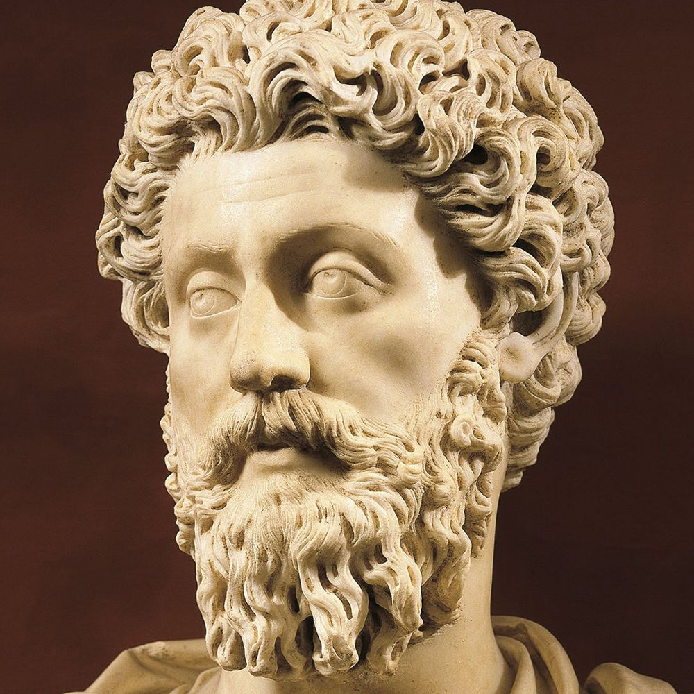

Marcus's Early Life
Marcus Aurelius was born in 121 to Marcus Annius Verus, a Praetor, and Domitia Lucilla Minor, the daughter of a patrician. Unlike most of the Emperor's I've talked about it seems a good bit of his childhood is written about. He had a sister born a few years after him, and his father passed when he was around 3. As a child he was fond of wrestling and boxing and joined a group dedicated to Mars, the Roman God of War. He seemed to start living a stoic life early on, with his teacher teaching him early on about this way of life. In the year 140 he became Consul for the first of three times and 5 years after that married Faustina. His time in politics doesn't seem to be too notable, mostly spending his time studying philosiphy and law. Marcus and his Wife would have a whopping thirteen children together, including twins, however the twins and a few others would not survive long. Once Antoninus passed in 161, Marcus Aurelius and his adopted brother Lucius Verus took over as co-emperors.
Marcus Aurelius as Emperor
Compared to the reign of Antoninus, Marcus's reign was a much more violent period for the Empire with many wars and a plague. One of the first things to happen during his reign was the flooding of the Tiber river in Rome. It was also during this year that the War with Parthia occured which lasted for five years leading to a Roman victory with a new client king established in Armenia and two major Parthian cities sacked. During the final year of the war, 166, Marcus named two of his sons as his heirs although only one, Commodus, would become Emperor. War with the tribes in Germania also started up which while including a Germanic invasion from the Northern provinces, did lead to a Roman victory with two more provinces being formed across the Danube river. Most of his time as Emperor however was spent dealing with legal and petty issues. It seems the matters he took the most interest in we're freeing slaves, helping the poor and orphans, and oddly enough the choice of city councillors. Unlike some Emperor's he also respected the Senate and was quite skilled in law, having spent much time studying it in his youth. During his reign, in 165, the Antonine plague ravaged much of the Empire with the death toll reaching upwards of ten million people. It isn't known for sure what it was but it seems to be smallpox according to modern sources which would explain how devestating it was. Possibly his most famous achievment during his time as Emperor came during the latter half with his writings of "Meditations", a book of his private writings and stoic views.
Death and Legacy
Upon his death and the succession of his son, Commodus, the rule of "The Five Good Emperors" was over, with a combined reign lasting 84 years, with Marcus Aurelius's reign lasting an impressive 19 years. He died of unknown causes in the year 180. He was remembered as more of a "philosipher king" than anything else and despite most of the works on him being dubious, he seems to be regarded as a genuinely good Emperor even by modern standards.